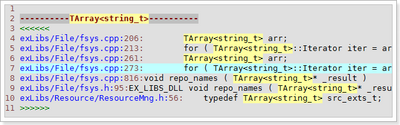
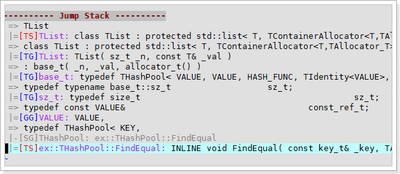

Project Entry File
exVim provide a way to orginze things together —– .vimentry file. You may working in different project at the same time, and you probably like to use different settings for them. By solving this problem, exVim let the user create a your_project.vimentry, and store the project settings in it. Each time you run a project, just use vim open this file, the exVim will automatically invoked and help you process the reset of the things.
For instance, you are now developing stl-3.3 project. then you can create a .vimentry file, named what ever you want, let’s say “stl-3.3.vimentry” and put it in your project root directory.

Use your vim open the .vimentry file and you will see the picture:

That is the default layout of exVim. You can see the settings automatically write into .vimentry files. You can custom the settings, and even add your own settings in it to fulfill your demands.
Browse Project Files
The exProject plugin —– the builtin file browser in exVim provides you a faster algorithm to explore source file than any other file browser plugin in vim. You can manage your file in the exProject dynamically, also allow you to filter files and directories in several methods.

The project/file browser in exVim is switchable, which means you can keep your favorite file browse plugin such as NERDTree, even more you can let the two plugins working together. The exVim already integrate NERDTree with exProject, by ctrl-left/right in project window, you can swith between two plugins.
Tag Operations
The exTagSelect and exSymbolTable plugins work together to help user operate tags in exVim. You can browse the tag of current code, select and jump to the tag define in plugin window.

exVim provide a symbol list extract from tag file, help you search tags faster.
Global Search
The exGlobalSearch plugins integrate the id-utils in vim for searching words in your project. This is faster than grep search except it needs user update the IDs to build up the search data.
When searching a word, the plugin will list the search result in the plugin window and user can jump to the select line directly in the plugin window:

The plugin provides useful way to help user filter the search result, which can let the user
search new patterns based on the last search results. For example, when we apply TArray

Jump Stack
When jumping to the search result in exVim, it will records your jump history and genreate the jump stack to help you trace your code. Unlike jumplist in vim, the exVim jump stack only records jumps for ex-vim-pluings and 3rd-party-pluings, and skip recording jumps happended in the plugin window.

Quick Fix
exQuickFix plugin enhanced vim’s original quickfix method, provide user friendly operations to locate warnings or errors. With the enhanced script, it checks the error information and determine the proper errorformat to the result. It also provide nice highlight and allow user search or filter results by search pattern.
Macro Highlight
exMacroHighlight plugin provides a windows let the user input the macro group they want and parse the macros to generate enabled and disabled macro highlight in c/c++ codes.
Instead of process all the macros defines in the project, the plugin only care about thoes macros user defined in the plugin window.
The picture below illustrate how macro highlight work in exVim, and what is the result looks like:

Generate Class Hierarchy
When working with Object-Orient programming languages, exVim will create an inherits list extract from tag file. User can use the file generate class hierarchy diagram by exVim’s ‘’:GV'‘ command for specific class, similar like the picture shows: